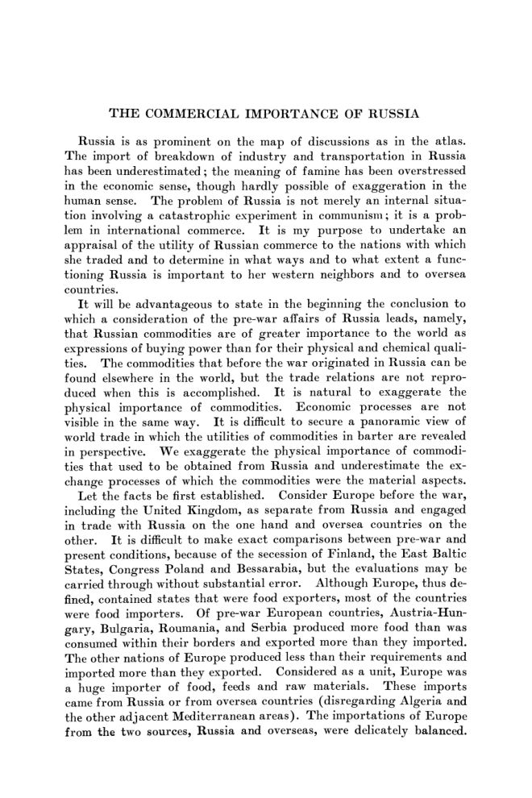

Taylor e a Rússia que o mundo perdeu como compradora
Leitura: 8 min
Alonzo Englebert Taylor sustenta que trigo, linho e platina russos foram substituídos com pouca dificuldade, mas que a capacidade de consumo da Rússia não tem substituto no comércio mundial.


Em 1921, segundo Alonzo Englebert Taylor, a Rússia exportou pouco mais de oito milhões de dólares em mercadorias, sem contar o ouro, e trens vazios chegavam aos portos do Báltico para levar um volume escasso de importações. Antes da guerra, o país respondia por quase 4% do comércio internacional. O artigo de Taylor, do Food Research Institute da Stanford University, pergunta o que esse desaparecimento significa para os vizinhos da Rússia e para os países de ultramar.
Para o autor, o problema não é só interno; é de comércio internacional. E ele dá a conclusão antes da prova: as mercadorias russas valiam para o mundo mais como expressão de poder de compra do que por suas qualidades físicas e químicas. Os bens podem ser encontrados em outra parte; as relações de troca que eles sustentavam, não.
Como a Europa pagava o que importava?
O ponto de partida é a Europa de antes da guerra, incluindo o Reino Unido, tomada como separada da Rússia. Alguns países, como Áustria-Hungria, Bulgária, Romênia e Sérvia, produziam mais alimento do que consumiam; os demais eram importadores. Como unidade, a Europa era uma enorme importadora de alimentos, rações e matérias-primas, que vinham da Rússia ou do ultramar, em proporções delicadamente equilibradas. Liverpool era a referência de preço; Londres, o lugar final de compensação das letras de câmbio.
A Europa não pagava importações só com mercadorias. O excesso de importações, que crescia antes da guerra, era coberto por rendimentos de investimentos no exterior, fretes, seguros, remessas de emigrantes e gastos de turistas.
Daí a tese central da primeira parte. O que a Rússia e os países de ultramar ofereciam à Europa era menos a expressão de sua capacidade produtiva do que da capacidade de consumo europeia. O limite estava nos compradores: esses países poderiam ter produzido muito mais se houvesse mercado. Quando um fornecedor saía de cena, os outros podiam cobrir o vazio rapidamente. A Rússia, como África do Sul, Austrália, Argentina e Canadá, estava no estágio extrativo: exportava matérias-primas, importava sobretudo manufaturas, com exceção do algodão, e precisava todo ano de novo capital estrangeiro.
Qual era o saldo comercial russo?
Taylor dedica uma seção à dificuldade de medir. O saldo comercial de um país muda conforme se usem os dados do próprio país ou os dos parceiros. Com os números russos, as médias dos cinco anos antes da guerra davam exportações de 670 milhões de dólares para a Europa e importações de 421 milhões. Com os dados dos países de origem e de destino, as exportações subiam para 988 milhões e as importações caíam para 311 milhões. O autor segue a prática dos estatísticos oficiais, que confiam mais nos números de importação: combina as importações russas com as exportações registradas pelos países de destino.
Com poucos recursos invisíveis, a Rússia usava o saldo sobretudo para pagar juros e amortizações do capital estrangeiro. Era o sexto exportador e o nono importador do mundo. A Alemanha, maior parceira, fornecia um terço das importações russas e comprava um quarto das exportações.
O que a Rússia vendia, e quem a substituiu?
Os produtos do solo dominavam. Os cereais respondiam por mais da metade do valor exportado; na média dos cinco anos antes da guerra, saíam 167 milhões de bushels de cevada e 161 milhões de trigo, além de aveia, centeio e milho e cerca de 600 mil toneladas de linhaça, girassol e outras oleaginosas. Os principais compradores eram Alemanha, Reino Unido, Países Baixos e França, nessa ordem.
Guerra e comunismo, escreve Taylor, apagaram por ora o excedente exportável, e outros países assumiram a função. Contra os prognósticos sombrios sobre os limites da agricultura mundial, ele sustenta que ainda havia uma reserva de terras que responde ao preço. Os Estados Unidos exportaram em média 3,13 milhões de toneladas longas de cereais panificáveis e farinha por ano de 1907 a 1914 e 6,43 milhões de 1915 a 1921; como a Rússia exportava cerca de 5 milhões de toneladas, os americanos sozinhos cobriram dois terços da substituição. Milho e aveia americanos e argentinos poderiam substituir a cevada; os trópicos ofereciam coco, amendoim, caroço de algodão e soja em quantidade praticamente ilimitada.
O mesmo exame vale para os demais produtos. O linho russo, em grande parte grosso, foi substituído por algodão processado, cânhamo, juta e seda. O manganês do Brasil e da Índia bastava à siderurgia. A Rússia fornecia nove décimos da platina do mundo antes da guerra; novas jazidas e estoques acumulados na guerra impediram a escassez. Nenhum desses produtos, conclui, era essencial a ponto de provocar uma catástrofe.
“O trigo russo vale mais como dinheiro do que como cereal de panificação.” (“The Russian wheat is more valuable as money than as bread-grain.”)
Por que o comprador não tem substituto?
Aqui está o centro do argumento. As principais importações russas eram algodão, em mais da metade americano, artigos de metal e máquinas, sobretudo alemães, e chá da China e da Índia. A Rússia pagava com cereais; sem exportações, suas importações cessaram. A Europa preferiria comprar 200 milhões de bushels de cereais panificáveis da Rússia e 350 milhões do ultramar a comprar os 550 milhões inteiros do ultramar, porque sua capacidade de pagar a Rússia com mercadorias é diferente de sua capacidade de pagar os países de ultramar.
A diferença, diz Taylor, é qualitativa e quantitativa. Qualitativa porque as fábricas europeias estavam equipadas para atender às especificações costumeiras do consumidor russo, enquanto Estados Unidos, Canadá, Austrália e Argentina, de padrão de vida alto, querem outras coisas. Quantitativa porque concentrar todas as compras no ultramar exigiria que esses países desenvolvessem de repente uma capacidade de consumo de produtos europeus que não se cria em um dia. A Alemanha trocaria artigos de metal por semente de girassol russa com muito mais facilidade do que por caroço de algodão americano, e o comércio triangular que antes contornava esses limites ainda não funcionava.
O autor dá dois exemplos. Se a Rússia não compra chá da Índia e da China, esses países compram menos tecidos britânicos; os fusos param, cai a importação de algodão e recuam a navegação, o seguro e os bancos britânicos. E se a Argentina aumenta em 60 milhões de bushels sua exportação de trigo, um terço do que a Rússia mandava à Europa, não passa por isso a consumir um terço do algodão que a Rússia importava. Os cereais eram metade das exportações russas, e o algodão, um sexto das importações. Quando a Rússia exportava 160 milhões de bushels de trigo, esperava ser paga em mercadorias; os exportadores de ultramar esperam ser pagos em ouro.
“O que o mundo sente falta hoje não é da produção russa, mas do consumo russo.” (“what the world misses today is not Russian production but Russian consumption.”)
O que o autor espera da reconstrução?
Taylor observa que a Europa ocidental parece concordar que a recuperação russa deve incluir alimentos, rações e matérias-primas, mas não manufaturas, e prevê capital negado à indústria e concedido à agricultura, às florestas e à mineração. Citando E. Dana Durand, no Quarterly Journal of Economics, avisa que excedentes exportáveis não virão fácil nos anos seguintes.
Na minha leitura
Na minha leitura, a força do artigo está em tratar a exportação como meio de pagamento. Medido pelo volume de trigo, o mundo não perdeu quase nada com a saída russa; medido pela rede de trocas, perdeu um comprador cujas necessidades se encaixavam no que a indústria europeia sabia fazer. O raciocínio é o de que exportações e importações são dois lados de uma mesma conta, e de que a substituição de um fornecedor não recompõe automaticamente a demanda que ele exercia.
O artigo também mostra cuidado com números frágeis: três versões do saldo russo, a escolha justificada de uma e o aviso de que ela pode estar cem milhões acima do real. A conclusão depende da estrutura, não do número exato.
Glossário
- Bushel
- medida de volume para grãos usada nos Estados Unidos e no Reino Unido.
- Tonelada longa
- unidade inglesa de peso, equivalente a 2.240 libras.
- Recursos invisíveis
- receitas externas que não vêm da venda de mercadorias, como fretes, seguros, juros e remessas.
- Comércio triangular
- troca em que o pagamento a um país é feito por meio de vendas a um terceiro.
- Estágio extrativo
- fase em que um país exporta sobretudo produtos agrícolas e minerais e importa manufaturas.
Fontes
- The Commercial Importance of Russia — Alonzo Englebert Taylor (Food Research Institute, Stanford University) (pp. 447–459). JSTOR · Internet Archive (PDF)
- Edição completa, com os demais artigos: Nº 178 do Arquivo.
Documento em domínio público (EUA, publicado antes de 1931), via JSTOR Early Journal Content e Internet Archive. Resumo e comentário do autor deste site, sem afiliação com a American Economic Association. Encontrou um erro? Escreva: a correção é publicada no próprio texto, com data.
↑ Nº 178 · Adams, o crédito, a Rússia que compra e o circuito do dinheiro Foster e o caminho do dinheiro de volta ao consumidor →